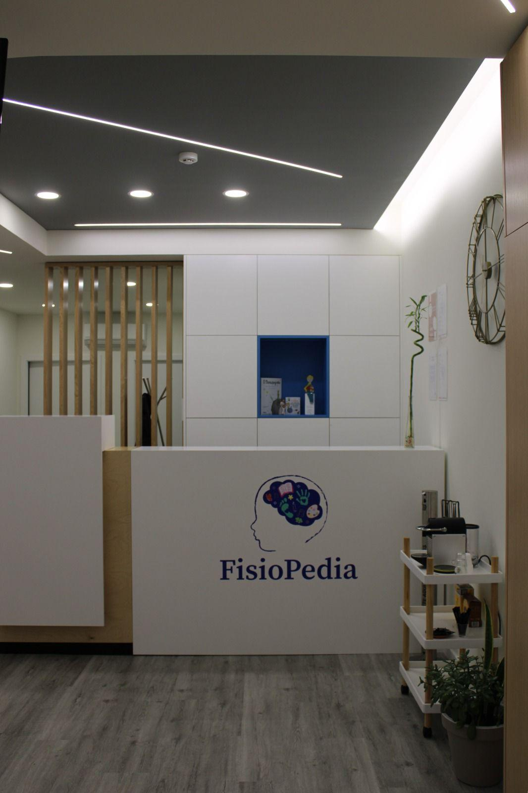
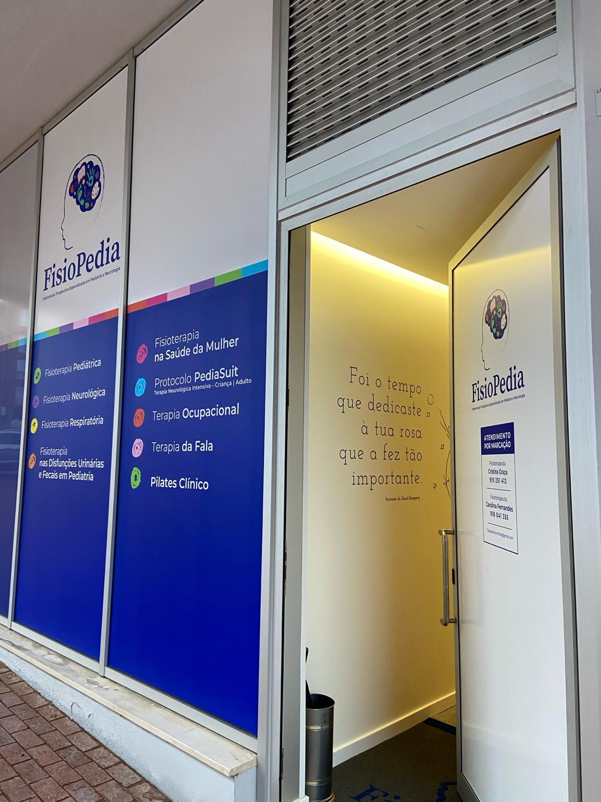
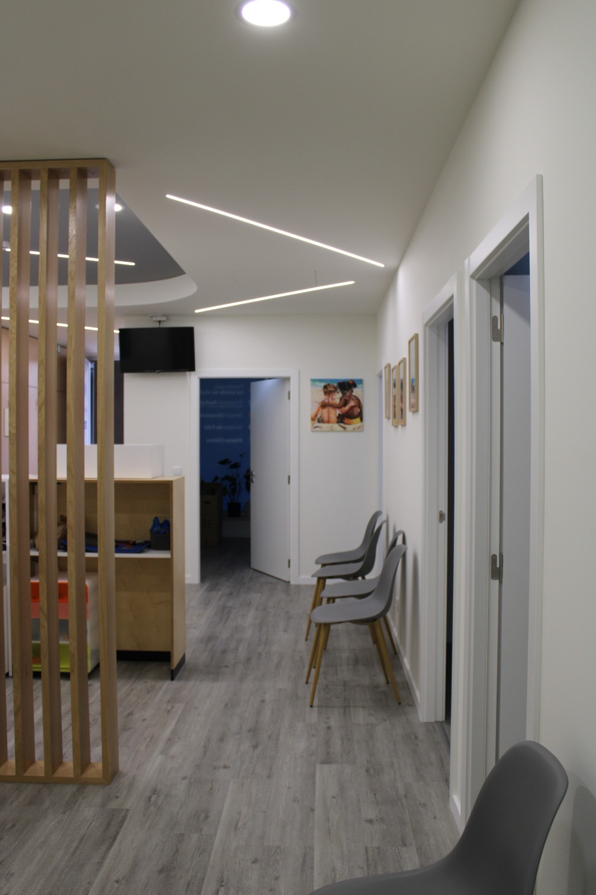

Fisioterapia & Reabilitação
Tratamentos de fisioterapia personalizados em Coimbra — lesões, reabilitação pós-cirúrgica, dores crónicas e muito mais.
Marcar Consulta
Tratamentos especializados para a sua recuperação
Tratamento de lesões musculoesqueléticas, fracturas, entorses e patologias articulares com técnicas baseadas em evidência.
Acompanhamento especializado após cirurgias ortopédicas para recuperar força, mobilidade e função no menor tempo possível.
Avaliação e correção de desequilíbrios posturais que causam dor crónica e limitações no dia-a-dia.
Abordagem integrativa para dores persistentes na coluna, ombros, joelhos e outras estruturas que afetam a qualidade de vida.
Tratamentos para melhorar a função respiratória, indicados em recuperações de doença respiratória e reabilitação pulmonar.
Programa de recuperação funcional para doentes com patologias neurológicas — AVC, Parkinson, esclerose múltipla e outras.
A FisioPedia é uma clínica de fisioterapia e reabilitação em Coimbra, dedicada a ajudar cada paciente a recuperar o movimento, reduzir a dor e melhorar a qualidade de vida.
Localizada na Portela do Mondego, a clínica oferece um ambiente tranquilo e acolhedor, com equipamento moderno e tratamentos personalizados para cada situação.
"O nosso objetivo é devolver-lhe a capacidade de viver e mover-se sem limitações."


Entre em contacto connosco
Rua Paul Harris LT 20.7 LJ A R/C
Urb. Portela do Mondego
3030-508 Coimbra, Portugal